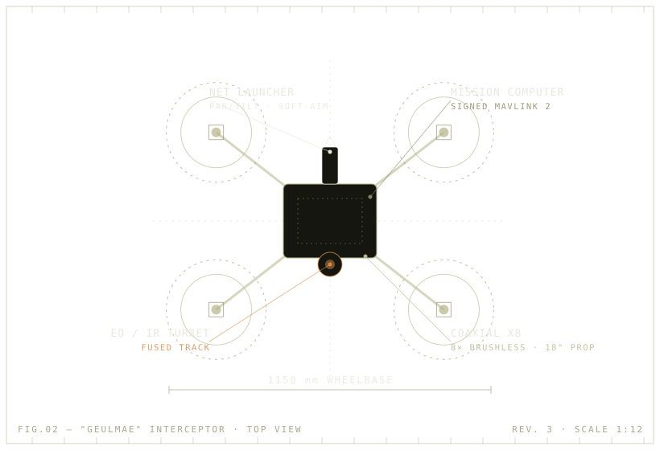
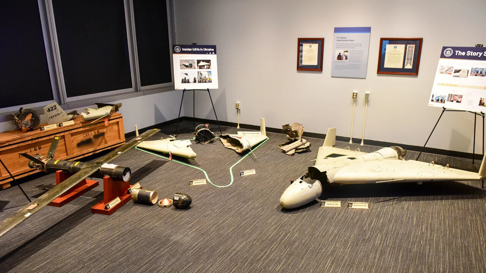
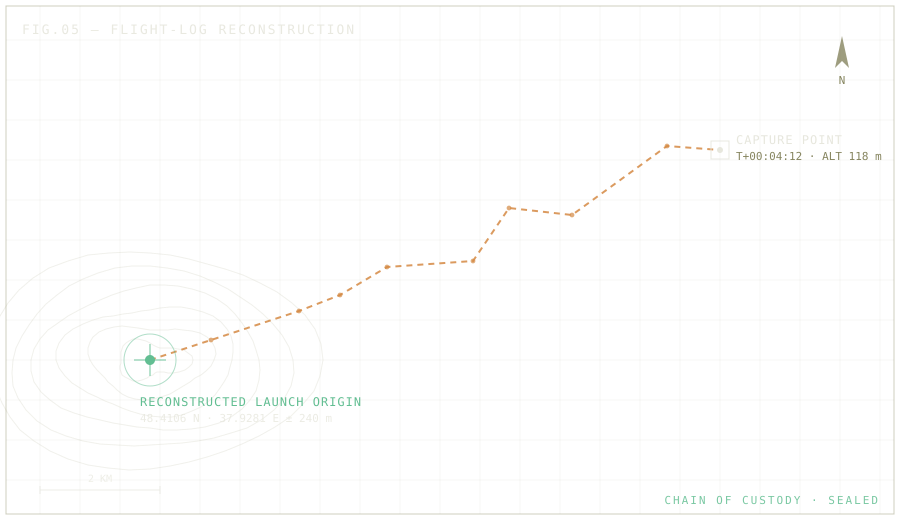
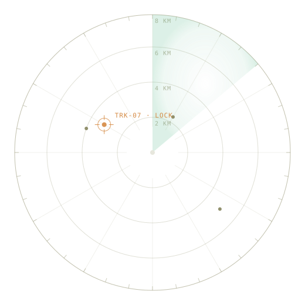

TRACKING · TRK-07 LOCK · BRG 094 · RNG 3.2 KM · ALT 118 M · NET LAUNCHER READY
Counter-UAS · Capture & exploit
Don't destroy it. Capture it.
TaloNet nets a hostile drone in flight and brings it back intact — not as falling
debris, but as a reusable airframe and a complete record of where it launched and what
it saw. Shoot it down and you destroy the evidence with it. We take the whole thing home.
A wrecked drone tells you nothing. A captured one tells you everything.
FIELD NOTE — Every other counter-UAS answer ends with a fireball
or a jammed band. Both of them throw away the most valuable thing in the sky: the drone itself.
01
The airframe is an asset, not a target
Kinetic and directed-energy kills turn a working aircraft into scrap and falling
debris. A netted drone lands whole — motors, optics, battery and frame all intact.
Recover it, refly it, or strip it for parts. One capture pays for itself.
Reusable airframe & serviceable components
No debris field, no spent munition
Catalogue the threat hardware you keep recovering
02
The memory is intelligence you can act on
A captured drone still holds everything it knew — flight logs, waypoints, payload
imagery, comms and firmware. Jamming corrupts it; a missile vaporises it. Physical
capture preserves it, bit for bit, all the way back to the enemy's launch point.
Flight logs → reconstructed track & launch origin
Payload, waypoints, comms recovered intact
Hardware & firmware for the exploitation team
Approach
Threat removed?
Asset kept?
Intel kept?
Electronic attack / jamming
Sometimes — spills onto friendly spectrum
No
No — link & logs corrupted
Kinetic / directed energy
Yes — plus debris
No — destroyed
No — vaporised
TaloNet — physical capture
Yes — contained in flight
Yes — intact & reusable
Yes — full forensic record
§ 02The engagement
Detect. Commit. Capture. Recover.
01
Acquire the track
Onboard EO/IR sensors, fused with RTK-grade navigation, hold the target and feed a
stabilized picture back to the operator.
02
Operator commits
A human classifies the contact and authorizes the intercept from the cockpit. Arm,
fire, cinch and release are deliberate, interlocked actions — never automatic.
03
Net the target
A software-aimed launcher places the net on the moving drone and a cinch line draws
the catch closed against the captured airframe.
04
Bring it home intact
The interceptor carries the catch back to base, where the airframe is recovered and
its storage handed straight to exploitation.
§ 03Capabilities
One airframe, the full engagement.
From acquisition to recovery, every link in the chain is on
the aircraft or in the operator's hands — not delegated to the network or to chance.
Net interception
A pan-and-tilt launcher places the net on a moving target, then a cinch line draws
the catch closed against the captured aircraft — a soft stop that keeps the airframe
whole instead of breaking it apart.
Recover & exploit
A surviving airframe carries its storage, payload and flight history home — turning
every intercept into a reusable asset and an intelligence package.
Manual teleop cockpit
Direct FPV flight with a heads-up overlay and keyboard controls. Low latency, full
authority, and an unambiguous human decision behind every shot.
Hardened navigation
GNSS anti-spoofing with Galileo OSNMA and receiver-autonomous integrity monitoring
keeps position truth even under deliberate interference.
Signed command link
MAVLink 2 message signing and an authenticated RF link with anti-replay protection
close the door on injection and takeover.
§ 04The platform — “Geulmae” interceptor
A heavy-lift airframe with margin to spare.
A coaxial X8 octocopter built to carry a launcher, a catch and a full sensor suite —
and still hold a 2.3:1 thrust margin for the dash and the snatch.
FIG. 02 — Top view. Net launcher forward, EO/IR turret
slung under the hub, mission computer signing every command in flight.

Configuration
Coaxial X8 octocopter, 1150 mm wheelbase
Empty / max takeoff
6.8 kg / 14 kg MTOW
Mission payload
~5 kg (launcher, net, sensors)
Propulsion
8 × brushless, 18″ props, 8 × 80 A ESC
Static thrust
~32 kgf · 2.3:1 ratio
Environmental
IP54 · up to 15 m/s wind
Dash / cruise
120 km/h max · 60 km/h cruise
Climb / ceiling
12 m/s · 5000 m
Endurance
42 min ferry · ~25 min capture profile
Operating radius
8 km
Hold precision
±0.1 m hover (RTK)
Compute / power
Mission computer + flight controller · 12S pack

“The drone you recover is the briefing the enemy never meant to give you.”
Recovered airframes, staged for exploitation. Every one is a lead.
§ 05Exploitation — ForensIQ-1
Every capture is a confession.
A recovered drone is a sealed record. ForensIQ-1 is a write-blocked, read-only
exploitation appliance that turns recovered storage into a chain-of-custody report —
and, where the data allows, pins the geolocated launch point of the hostile aircraft.

FORENSIQ-1 · SESSION 0xA7F3 · READ-ONLY
> mount /dev/sdb WRITE-BLOCKED
> sha256 image.bin
9f2c…e41dVERIFIED
> parse flight_log.bin
waypoints ............ 214
payload frames ....... 1,886
comms records ........ 73
> reconstruct trajectory
capture 48.5612 N 38.0411 E
origin 48.4106 N 37.9281 E ±240 m
> export report.pdf SIGNED
custody ........... SEALED
01
Intake
Recovered media is logged, photographed and sealed under custody.
02
Image & hash
Write-blocked copy, SHA-256 verified bit for bit.
03
Reconstruct
Flight logs parsed into a full trajectory and payload timeline.
04
Geolocate
Trajectory walked back to an estimated launch origin with error bounds.
05
Report
Signed PDF and field printout with a complete custody trail.
±240 mtypical launch-origin fix from reconstructed flight logs
SHA-256write-blocked acquisition, hash-verified end to end
ForensIQ-1 produces intelligence for the commander. It is an analysis tool — never an
instruction to act.
§ 06The cockpit
Built for the operator, not around them.
The ground station is a single, legible cockpit: live FPV, a heads-up state overlay,
and a control scheme tuned for the seconds that matter. Targeting is software-assisted;
the trigger is not. Arming, firing, cinching and release are separate, interlocked
commands that only a person can give.
Flight — pitch, roll, yaw and throttle on a low-latency manual loop
Net aim — pan/tilt the launcher against the tracked target
Safety interlocks — fire, cinch and release require an armed state
One-touch recovery — return-to-home and emergency stop always within reach
WASD attitudeIJKL net aimSPACE fireC cinchV releaseB e-stop
LIVE · FPV
§ 07Operating envelope
Reach the threat before it reaches its target.
An 8-kilometer radius and a 120 km/h dash put the interceptor on the drone before it
gets where it was going. Once the catch is secure, it comes home — and so does
everything the drone knows.
8 kmReach
120 km/hDash
±0.1 mHover hold

§ 08Engineered to hold
Hardened where it counts.
An interceptor is only as trustworthy as its own links. TaloNet protects its
navigation and command paths the way the rest of the airframe is built — for the
contested case, not the demo. And because the capture is physical, the drone's data
survives the engagement instead of being jammed or blown apart.
Position integrity — OSNMA authentication and RAIM gating reject spoofed GNSS
Command authenticity — MAVLink 2 signing on every control message
Link security — keyed RF channel with replay protection
Graceful degradation — defined verdicts from trusted to dead-reckon to return-home
TaloNet captures by physical means and defends its own systems; it does not jam, spoof
or take over other aircraft.
Get in touch
Request a briefing.
Walk through the system with our team — capabilities, integration, and evaluation
options for your airspace. Tell us a little about your requirement and we'll follow up.
Request received. Our team will be in touch at the address you provided.